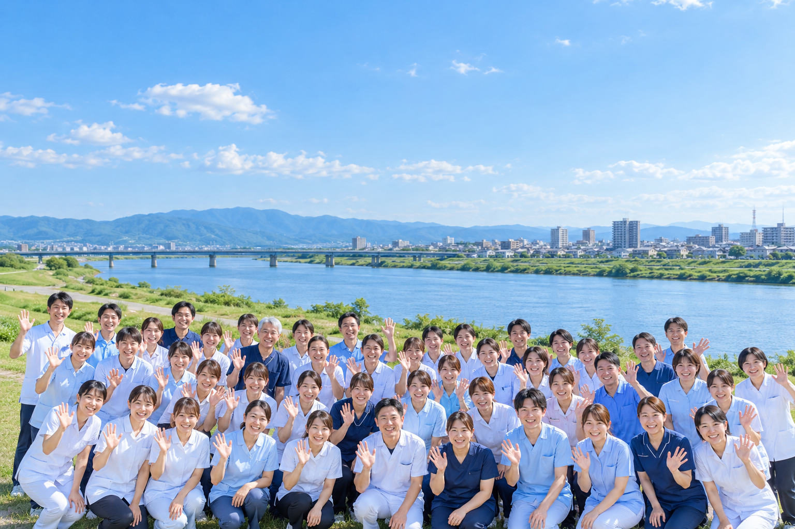

BLOOM GROUP · KURUME / CHIKUGO
この街と、ともに。
あなたの毎日に、
笑顔を。
住み慣れた街で、自分らしく。
介護・看護・福祉を通して、暮らしに寄り添います。
人と人のつながりが、
この街の安心になる。SCROLL ↓
この街の安心になる。SCROLL ↓
ABOUT BLOOM
いつもの暮らしに、
安心という彩りを。
ご本人にも、ご家族にも。
大切にしたいのは、その人らしい毎日。
Bloomグループは、久留米・筑後の地域で、
ケアプランから介護・看護、住まい、福祉用具まで、
暮らしを支えるサービスをご案内しています。
OUR SERVICES
暮らしに寄り添う、
5つのサービス。
必要な支えを、必要なときに。
それぞれの専門性で、地域の毎日を支えます。
01CARE MANAGEMENT居宅介護支援
ケアプラン鈴・ケアプラン鈴くるめ
介護の相談をしたい＋
居宅介護支援
ケアプラン鈴・ケアプラン鈴くるめ
介護サービスの利用に関するご相談や、ケアプランの作成を通じて、ご本人とご家族の暮らしを支えます。
ケアプラン鈴に電話する 0944-78-1135 ↗02NURSING HOME住宅型有料老人ホーム
百夢の森
安心して暮らす住まいを探したい＋
住宅型有料老人ホーム
百夢の森
久留米市三潴町にある、全22室の住宅型有料老人ホーム。入居やご見学、最新の空室状況は施設へお問い合わせください。
百夢の森に電話する 0942-64-8765 ↗03HOME CARE訪問介護
ヘルパーステーションももゆめ
自宅での暮らしを支えてほしい＋
訪問介護
ヘルパーステーションももゆめ
住み慣れたご自宅での生活を支える、訪問介護・障がい福祉サービスをご案内します。
お問い合わせ 070-5369-5152 ↗04HOME NURSING訪問看護
訪問看護ステーションももゆめ
自宅で看護を受けたい＋
訪問看護
訪問看護ステーションももゆめ
ご自宅で療養される方の暮らしに寄り添う訪問看護。ご利用については事業所へご相談ください。
お問い合わせ 080-7943-6213 ↗05WELFARE EQUIPMENT福祉用具・住宅改修
ももゆめレンタルサービス
暮らしやすい環境を整えたい＋
福祉用具・住宅改修
ももゆめレンタルサービス
福祉用具の貸与・販売、住宅改修のご相談を通じて、ご自宅での暮らしを支えます。
お問い合わせ 0942-65-7888 ↗STAFF IMAGE
CONTACT
まずは、お話ししませんか。
ご利用の相談・施設の見学・採用について、
お気軽にお問い合わせください。